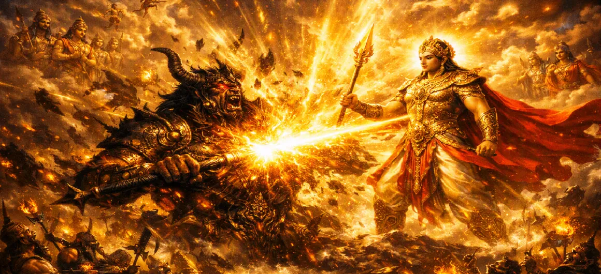

The Death of Tārakāsura
Chapter 27 of the Kumara Khanda chronicles the monumental climax of the celestial war—the historic downfall and liberation of the tyrant Tārakāsura by Lord Skanda.
With a single decisive stroke of his divine Vel, Lord Skanda restores eternal righteousness to the cosmos and frees the three worlds from oppression.
Chapter 27 Highlights & Full Overview
The Final Strike
Lord Skanda unleashing the infallible divine Vel.
Shattering the Ego
The destruction of Tārakāsura's impenetrable armor and pride.
Cosmic Liberation
The three worlds relieved from long-standing tyranny.
Celestial Rejoicing
Rain of flowers and joyous chants echoing from the heavens.
Fulfilling Destiny
Realization of the divine prophecy for Skanda's birth.
Restoring Order
Re-establishment of cosmic peace and divine harmony.
Core Topics Detailed in This Chapter
1. The Pinnacle of the Duel
As the fierce duel between Lord Skanda and Tārakāsura reaches its absolute height, the demon king attempts one final, desperate burst of dark energy. Recognizing that the time for decisive resolution has arrived, Lord Skanda prepares to end the tyrant's reign once and for all.
2. Invoking the Supreme Vel
Lord Skanda takes up his blazing, infallible divine spear (Vel)—gifted by Goddess Pārvatī and charged with the combined spiritual energy of the cosmos. Holding the weapon aloft, he infuses it with pure divine consciousness, making it shine like a thousand suns.
3. The Fall of Tārakāsura
With lightning speed, the divine Vel is hurled across the battlefield. It pierces effortlessly through Tārakāsura's impenetrable armor and his formidable ego, neutralizing his dark boons. The tyrant falls to the earth, his life force merging back into the divine source, bringing an end to his oppressive reign.
4. Rejoicing of the Gods and Sages
Upon witnessing the defeat of Tārakāsura, the heavens erupt in uncontainable joy. Celestial beings shower flowers from above, divine drums beat in rhythmic celebration, and Lord Indra along with the deities praise Lord Skanda with hymns of utmost gratitude and reverence.
5. Spiritual Significance of the Demon's Liberation
Scriptures note that the death of Tārakāsura at the hands of divine grace is not mere destruction, but ultimate liberation (Mukti). By confronting and cutting down the ego, the soul is freed from ignorance and reunited with supreme consciousness.
6. Transition to Chapter 28 (Celebration of Divine Victory)
With the tyrant vanquished and cosmic order restored across the three worlds, the joyous celebrations begin. This momentous occasion leads directly into Chapter 28: **Celebration of Divine Victory**.
Key Teachings and Spiritual Takeaways of Chapter 27
Triumph of Light
Righteousness inevitably prevails over darkness and tyranny.
Power of Wisdom
The divine Vel represents spiritual awareness piercing illusion.
Ultimate Liberation
Even ego, when purified by divine grace, finds ultimate peace.
Divine Grace
Grace dispels all suffering and restores universal harmony.
New Dawn
The end of oppression marks the beginning of an era of peace.
Fulfillment
Divine purpose is successfully realized through steadfast action.
Spiritual Reflection
Chapter 27 teaches us that when spiritual awareness (the Vel) pierces the deepest layers of ego (Tārakāsura), inner liberation is attained. The destruction of the outer tyrant symbolizes the eradication of inner ignorance, allowing the light of truth to shine eternally within the heart.
Living the Message of Chapter 27
Allow wisdom and spiritual awareness to dismantle deep-seated negative habits.
Cultivate gratitude and joy when major personal obstacles are successfully overcome.
Trust that persistence in righteousness eventually leads to peace and inner liberation.
Key Spiritual Concepts
The infallible piercing light of divine wisdom.
The termination of tyrannical negative forces.
The ultimate spiritual liberation through grace.
The re-establishment of cosmic righteousness.
The joyous celebration and relief of the celestial beings.
The full completion of divine destiny and cosmic law.
Chapter Summary
Kumara Khanda Chapter 27 describes the historic defeat and death of Tārakāsura. Wielding his divine Vel, Lord Skanda pierces the tyrant's ego, liberating the three worlds and restoring eternal cosmic order, which sparks joyous celebrations across the heavens.
Frequently Asked Questions
1. What is the primary focus of Kumara Khanda Chapter 27?
Chapter 27 covers the historic climax of the celestial war, detailing the defeat and death of the demon tyrant Tārakāsura at the hands of Lord Skanda using his divine Vel.
2. How is Tārakāsura finally vanquished?
Lord Skanda unleashes his supreme divine spear (Vel), which penetrates the impenetrable armor and ego of Tārakāsura, restoring cosmic order.
3. What chapter follows Chapter 27?
The next chapter is Chapter 28, titled 'Celebration of Divine Victory'.
“With the infallible divine Vel, Lord Skanda pierced the heart of tyranny, freeing the three worlds and restoring eternal righteousness.”
Continue Through Kumara Khanda
Chapter 27 details the death of Tārakāsura. Continue to the next chapter, Celebration of Divine Victory.